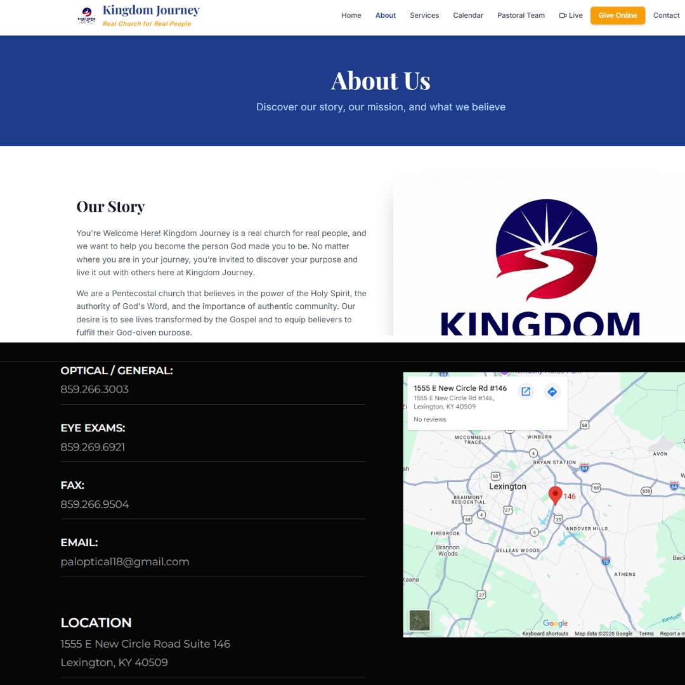
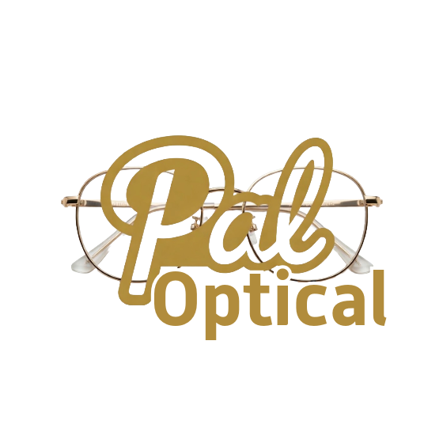

A collection of custom websites built for various clients — each one tailored to their brand, audience, and specific goals.
Overview
Every client has a different story to tell and a different audience to reach. These websites were built from scratch — no page builders, no templates — with a focus on performance, clarity, and a design that actually reflects the client's identity.
Each project started with a conversation about goals, then moved through wireframing, design, and development. The result in every case is a fast, mobile-first site the client can be proud of.
Featured Sites
Screenshots


Selection of client-focused site visuals demonstrating branding range and execution consistency.
My Approach
Every project starts with understanding what the client actually needs the site to do — not just what it should look like.
All sites are designed and built mobile-first, then scaled up — because that's where most visitors actually are.
No bloated frameworks or unnecessary dependencies. Fast load times, optimized images, and clean code throughout.
Semantic HTML, proper meta tags, structured data, and fast performance — the foundations of good search visibility.
Tech Stack